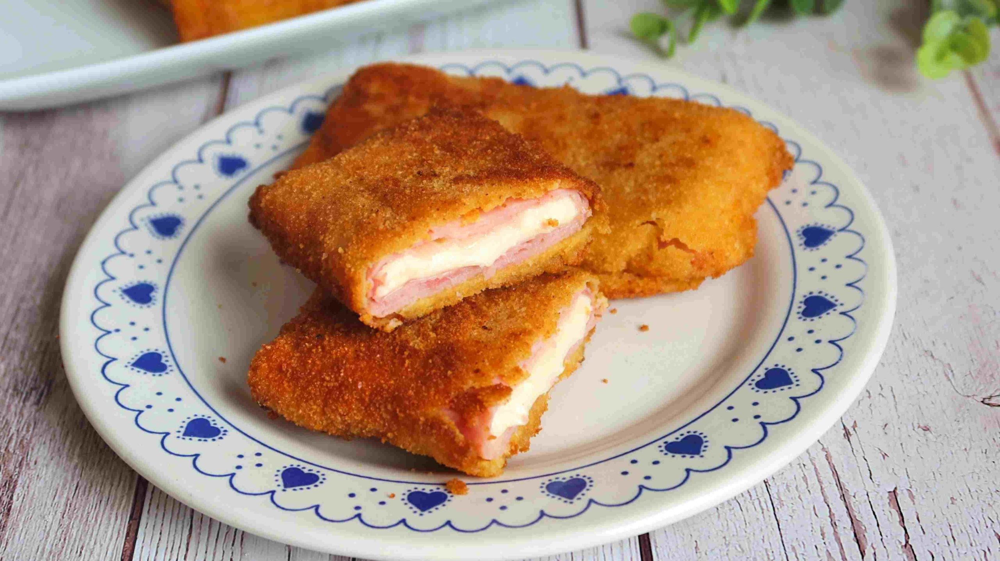

"La cocina es multisensorial. En el instante en el que pruebas un plato, la información que llega al cerebro es impresionante"
Ferran Adrià

Ingredientes
8 lonchas de jamón cocido
8 lonchas de queso para fundir
2 huevos grandes
4 cucharadas de harina de trigo
4 cucharadas de pan rallado
Aceite de oliva suave para freir
Receta
Con cada loncha de jamón cocido haremos un libro en el que pondremos una loncha de queso.
Doblamos el jamón por la mitad y dejando el queso en su interior.
Hacemos cada San Jacobo con dos libritos, con lo que en cada uno irán dos lonchas de jamón y dos de queso.
Empanaremos los San Jacobos con el rebozado, pasándolos por harina, huevo y pan rallado.
La harina ayuda a que el huevo se adhiera mejor al jamón cocido, y el huevo ayuda a fijar el pan rallado. Es recomendable rebozar el San Jacobo con una sola capa para que no sea demasiado grueso.
Cuando tengamos todos los san Jacobos preparados calentamos abundante aceite en una sartén y los vamos friendo a temperatura media-alta.
Retiramos a una bandeja con papel de cocina para absorber el aceite sobrante.